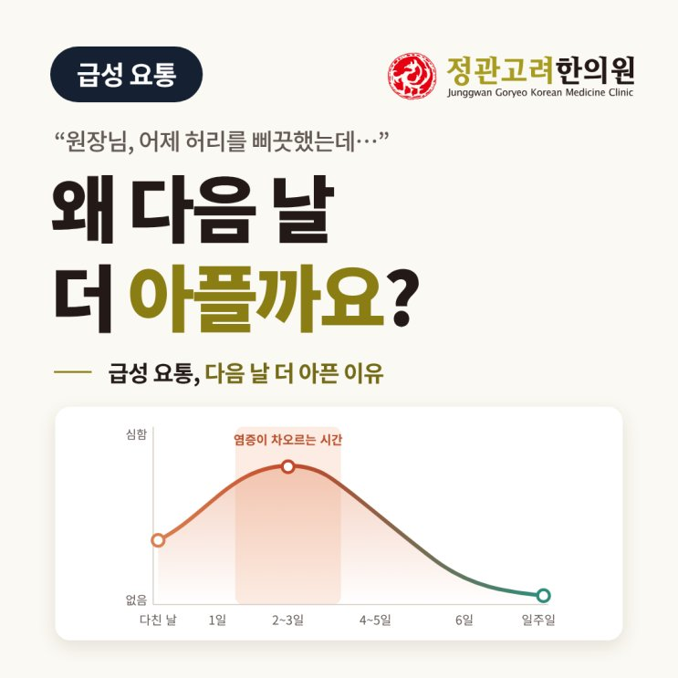
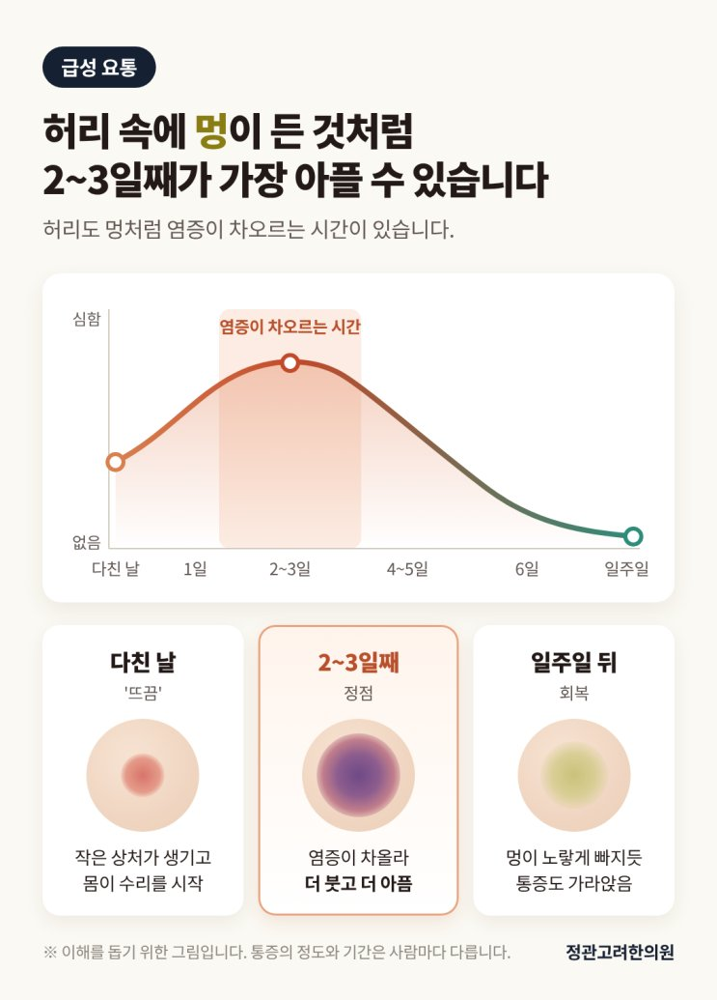
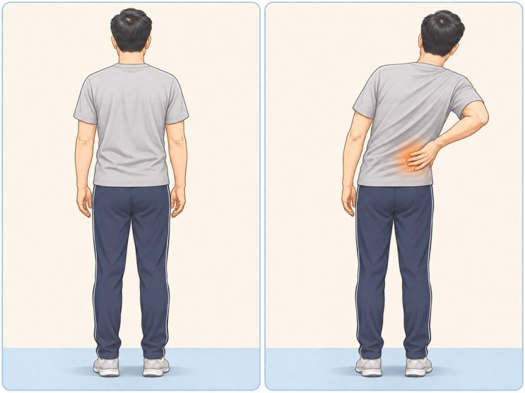
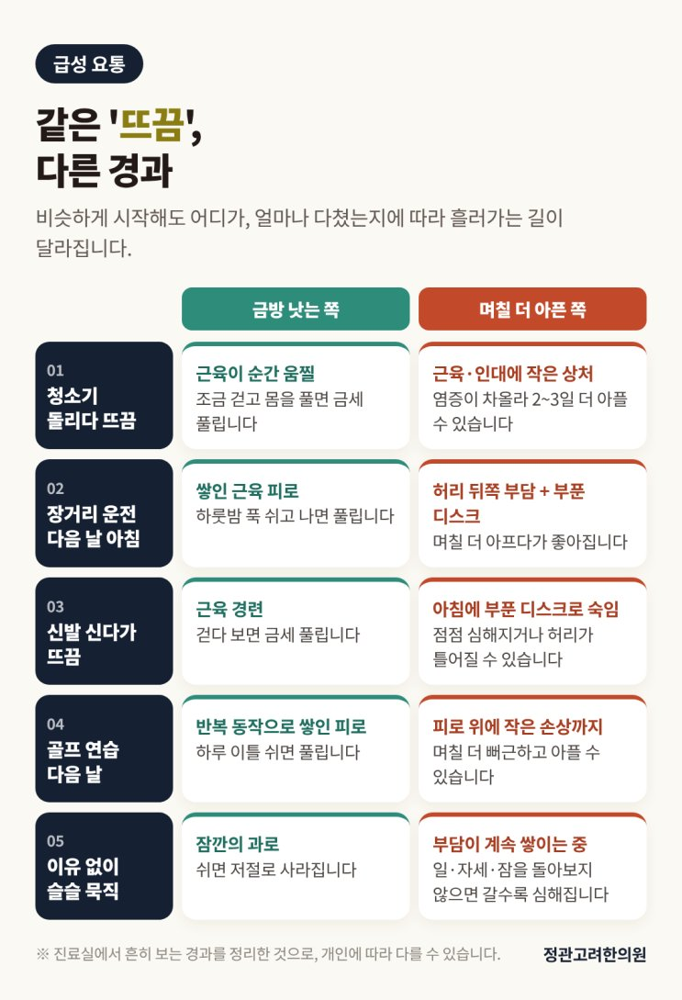
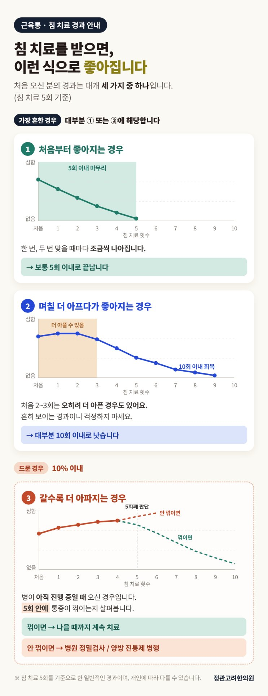
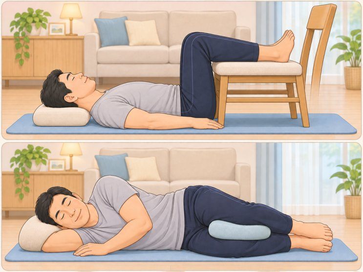

허리 삐끗했는데, 왜 다음 날 더 아플까요? — 허리 '뜨끔' 뒤 처음 며칠은 이렇게 흘러갑니다
이 글에서 알 수 있는 내용
- 허리를 삐끗한 다음 날 더 아픈 이유
- 같은 뜨끔인데 사람마다 경과가 다른 이유와 침 치료 경과 세 가지
- 처음 며칠 집에서 지내는 법과 바로 진료가 필요한 경우

"원장님, 어제 허리를 삐끗했는데 오늘은 더 아파요."
진료실에서 참 자주 듣는 이야기입니다.
환자분들이 허리가 아파 오시는 계기를 들어보면, 대개 이런 평범한 일상에서 시작됩니다.
- "청소기를 돌리다가 허리가 '뜨끔'했습니다."
- "전날 장거리 운전을 하고 자고 일어났더니 허리가 뻐근합니다."
- "현관에서 신발을 신으려 숙이다가 허리가 '뜨끔'했습니다."
- "어제 골프 연습을 좀 했더니 허리가 뻐근합니다."
- "딱히 무리한 기억도 없는데 허리가 슬슬 묵직해지기 시작했습니다."
정작 그다음부터는 사람마다 전혀 다른 길을 갑니다.
어떤 분은 조금 걷다 보면 금세 풀려서 하루 이틀 만에 거뜬해지는 반면, 어떤 분은 다음 날 더 심해져서 허리를 제대로 펴지도 못하고 급기야 상체가 한쪽으로 틀어지기도 합니다.
비슷한 동작으로 '뜨끔'했는데 왜 이렇게 경과가 갈릴까요?
오늘은 근육통을 비롯한 급성 허리 통증이 처음 발생한 날부터 며칠 동안 우리 몸속에서 어떤 일이 벌어지는지 차근차근 풀어드리겠습니다.
결론부터 말씀드리면, 처음 아픈 날의 모습만으로는 앞으로 통증이 어떻게 흘러갈지 누구도 100% 장담하기 어렵습니다.
다만 한 가지 분명한 건,
처음 2~3일 동안은 병세 자체의 흐름상 원래 더 아플 수 있고, 그것이 꼭 상태가 나빠지고 있다는 뜻은 아니라는 점입니다.
그래서 저는 초진 환자분께 "앞으로 이런 식으로 흘러갈 수 있습니다" 하며 진료실 모니터의 그림부터 먼저 보여드립니다.
같은 허리 통증이라도 회복되는 과정은 제각각입니다
급성 요통으로 동네 병원을 찾은 1,585명의 통증을 12주 동안 추적 관찰한 호주 연구가 있습니다.1
이 연구에서도 환자들이 모두 같은 속도로 낫지는 않았습니다. 통증이 줄어드는 과정을 묶어보니 크게 다섯 가지 유형으로 나뉘었습니다.
- 10명 중 3~4명은 2주 안에 통증이 거의 사라졌습니다.
- 비슷한 비율의 다른 그룹은 그보다 시간을 두고 천천히 좋아졌습니다.
- 나머지 일부는 회복이 더디거나 통증이 오래 이어졌습니다.
똑같이 '급성 요통'이라는 이름으로 내원하셔도, 회복되는 속도와 과정은 제각각이라는 뜻입니다.
처음 온 날의 진찰만으로 어느 유형에 속할지 단번에 맞히기 어려운 이유도 여기에 있습니다.
그래서 초진에서는 막연한 장담보다 '언제 다시 상태를 점검하고 판단할지 기준선'을 잡아두는 것이 훨씬 중요합니다.
왜 다음 날 더 아플까요?
허리를 삐끗했다고 해서 다친 바로 그 순간이 가장 아픈 건 아닙니다.
정강이를 책상 모서리에 세게 부딪혔을 때를 떠올려 보세요.
부딪힌 그 순간도 찌릿하지만, 정작 멍이 퍼지고 스치기만 해도 욱신거리는 건 다음 날이나 이틀 뒤입니다.
교통사고 역시 사고 당일엔 얼떨떨해서 몰랐다가 다음 날부터 온몸이 쑤시는 경우가 흔하지요.
허리도 이와 비슷한 과정을 겪습니다.
실제로 허리 안에 시퍼런 멍이 드는 것은 아니지만, '뜨끔'하는 순간 근육이나 인대에 미세한 상처가 생기면 우리 몸은 다친 곳을 고치기 위해 혈액과 회복 물질을 그쪽으로 한꺼번에 보냅니다.
이것이 바로 '염증 반응'입니다.
염증이 차오르면 자연스럽게 붓고, 열감이 돌고, 통증 신경이 예민해집니다.
근육이나 인대가 다치면 처음 며칠 동안은 이런 염증 반응이 올라오고, 그 뒤를 이어 손상된 조직을 메우고 다듬는 회복 단계가 진행됩니다.2

※ 이해를 돕기 위한 그림입니다. 통증의 정도와 기간은 사람마다 다릅니다.
첫날엔 그럭저럭 움직일 만했는데 다음 날, 그다음 날이 더 아파지는 이유가 바로 이 때문입니다.
보통 2~3일쯤 정점을 찍고 나면, 붓기가 빠지듯 통증도 조금씩 가라앉기 시작합니다.
염증은 '적'이 아니라 '수리공'입니다
흔히 염증이라고 하면 무조건 없애야 할 나쁜 것으로 여기기 쉽습니다.
하지만 염증은 우리 몸이 스스로 망가진 곳을 고치는 첫 번째 작업입니다. 손상된 찌꺼기를 치우고 새살이 돋을 자리를 닦아놓는 과정이죠.
그러니 처음 며칠 더 아픈 것은 병이 덧난 게 아니라, 내 몸의 수리공들이 본격적으로 일을 시작했다는 신호이기도 합니다.
같은 '뜨끔'인데, 왜 사람마다 경과가 다를까요?
우리가 흔히 '허리 근육통'이라고 부르는 통증 뒤에는 생각보다 다양한 원인과 조건이 겹쳐 있습니다.
① 어디가, 얼마나 다쳤느냐
겉으로 느끼는 '뜨끔'의 정체는 사람마다 다릅니다.
근육이 순간적으로 움찔하며 뭉친 정도일 수도 있고, 근섬유나 인대에 미세한 상처가 났을 수도 있습니다. 조금 더 깊숙이 척추 뒤쪽 작은 관절(후관절)이나 추간판(디스크) 바깥쪽 껍질까지 자극을 받았을 수도 있지요.
단순히 근육만 놀라 움찔한 정도라면 조금 걷고 몸을 풀다 보면 금세 가라앉습니다.
반면 조직에 미세한 상처가 났다면 앞서 말씀드린 염증이 올라왔다 빠지는 시간이 필요합니다.
문제점은, 처음 뜨끔한 그 순간의 통증만으로는 이 둘을 칼같이 가려내기 어렵다는 데 있습니다.
② 허리를 지키려고 근육이 얼마나 굳느냐
허리가 다치면 우리 몸은 환부를 보호하기 위해 주변 근육을 돌처럼 단단하게 굳힙니다. 팔이 부러졌을 때 부목을 대듯, 근육이 스스로 부목 역할을 하는 셈입니다.
이 보호 반응이 적당하면 다친 곳을 잘 지켜주지만, 과도하게 굳어버리면 단단해진 근육 자체가 새로운 통증의 원인이 됩니다.
허리를 펴기도 버겁고, 자다가 돌아눕는 것조차 힘들어집니다.
허리가 한쪽으로 틀어졌다면 조금 더 조심하셔야 합니다
아파서 오신 분들 중 상체가 한쪽으로 기우뚱하게 기울어져 있는 경우가 있습니다. 이를 '편위'라고 부릅니다.
편위가 나타났다는 것은 근육이 아주 강하게 굳어 있다는 뜻이자, 디스크가 관여하고 있을 수 있다는 신호이기도 합니다.
이런 경우 저는 환자분들께 "이건 단순 근육통과 디스크의 중간 정도의 상태니 각별히 조심하셔야 합니다"라고 말씀드리며, 편위가 없는 분들에 비해 회복 기간도 조금 더 넉넉히 잡는 편입니다.

③ 아침이냐, 저녁이냐
신발을 신다가, 세수를 하다가, 양말을 신다가 허리가 '뜨끔'해서 오시는 분들이 유독 많습니다. 대부분 아침 시간에 벌어지는 일입니다.
허리 디스크는 일종의 스펀지와 같습니다.
낮 동안에는 체중에 눌려 수분이 조금씩 빠져나가고, 밤새 누워 쉬는 동안 다시 수분을 머금어 통통해집니다.
그래서 자고 막 일어난 아침에는 디스크가 빵빵하게 부풀어 있는데, 이 상태에서 허리를 숙이면 디스크가 받는 압력이 훨씬 커집니다.3
실제로 만성 요통 환자분들에게 아침에 허리 숙이는 동작만 줄이게 했더니 통증이 줄었다는 임상시험 결과도 있습니다.4
전날 장거리 운전을 하고 다음 날 아침에 허리가 아픈 것도 같은 맥락으로 이해할 수 있습니다.
오래 구부정하게 앉아 있으면서 허리 뒤쪽에 피로와 부담이 쌓인 데다, 밤사이 디스크까지 부푼 상태에서 아침을 맞기 때문입니다.
그래서 "자고 일어났더니 갑자기 아파요" 하시는 분들께는 꼭 여쭤봅니다.
"혹시 하루 이틀 전에 차를 오래 타셨거나, 오래 앉아 계셨거나, 평소 안 하던 일을 하시진 않으셨나요?"
여쭤보면 열에 여덟아홉은 짚이는 일이 있으십니다.
④ 회복 속도를 가르는 세 가지
정강이에 멍이 들었는데 그 자리를 자꾸 부딪히면 멍이 빠질 새가 없습니다.
허리도 덜 아문 상태에서 다시 무거운 물건을 들거나, 오래 앉아 있거나, 무리한 일을 이어가면 가라앉던 염증이 도로 올라옵니다.
저는 환자분들께 회복을 결정짓는 세 가지를 자주 말씀드립니다.
① 병의 깊이, ② 집에서 얼마나 조심하는가, ③ 본인의 회복력
초기 통증이 유독 강할수록, 체중 부담이 클수록, 무거운 걸 들거나 불편한 자세로 오래 일해야 할수록, 또 마음이 지치고 우울할수록 요통이 길어지는 경향이 있습니다.5
예전에 허리를 크게 다친 적이 있는 분들도 마찬가지이고요.
골프처럼 허리를 반복해서 비트는 운동을 한 다음 날 뻐근한 것도, 같은 동작이 되풀이되며 근육에 피로가 쌓였기 때문인 경우가 많습니다.
결국 의사는 치료를 통해 몸이 잘 낫도록 거드는 역할을 할 뿐, 실제 회복은 내 몸 안에서 이루어지는 일이라 충분한 휴식과 시간이 꼭 필요합니다.

※ 진료실에서 흔히 보는 경과를 정리한 것으로, 개인에 따라 다를 수 있습니다.
그래서 저는 첫날 이 그림을 보여드립니다
허리가 아파 처음 오신 날, 저는 환자분께 진료실 모니터의 이 그림을 먼저 보여드립니다.

※ 위 그래프는 제가 실제 진료 현장에서 경험한 회복 양상을 이해하기 쉽게 정리한 것입니다. 치료 횟수와 비율은 연구 통계가 아닌 임상 경험에 따른 추정치이므로, 개인의 상태에 따라 달라질 수 있습니다.
침 치료를 시작하시면, 처음 오신 분의 경과는 대개 아래 세 가지 중 하나로 흘러갑니다.
① 처음부터 조금씩 좋아지는 경우
한 번, 두 번 침을 맞을 때마다 통증이 눈에 띄게 줄어드는 경우입니다.
환자분도 한결 편하시고, 치료하는 저로서도 가장 반가운 흐름이지요.
보통 5회 이내로 무난하게 마무리됩니다.
② 며칠 더 아프다가 좋아지는 경우
처음 2~3회차까지는 비슷하거나 오히려 더 아플 수 있습니다.
앞에서 말씀드린 염증 반응이 차오르는 시기이거나 치료 부위에 일시적인 뻐근함이 겹친 경우입니다.
진료실에서 아주 흔히 보는 경과이니 너무 걱정하지 않으셔도 됩니다.
이 고비만 넘기면 점차 가라앉아 대부분 10회 이내로 회복됩니다.
③ 갈수록 더 아파지는 경우
드물지만 10명 중 1명이 채 안 되는 비율로 이런 경우가 있습니다.
아직 병세가 한창 진행 중일 때 오셨거나 단순 근육이 아닌 디스크·후관절 등 깊은 구조물이 자극을 받은 상태일 수 있습니다.
이때는 무작정 치료만 끌지 않고 '5회째'를 판단 기준선으로 삼습니다.
5회 안에 통증이 꺾이면 나을 때까지 꾸준히 치료하고, 만약 꺾이지 않고 계속 올라간다면 병원에서 정밀검사를 받아보시고 양방 진통제를 함께 쓰시길 권해드립니다.
첫날부터 이 그림을 미리 보여드리는 데는 분명한 이유가 있습니다.
만약 다음 날 더 아파졌을 때 아무 설명을 듣지 못했다면 '치료가 안 맞나?', '더 망가진 건가?' 하며 덜컥 겁이 나기 마련입니다.
하지만 미리 그림을 보고 가셨다면 이렇게 받아들이실 수 있습니다.
'아, 원장님이 말씀하신 그 두 번째 길이구나. 2~3일 고비만 넘기면 꺾이겠구나.'
똑같은 통증이라도 알고 겪는 것과 모르고 겪는 것은 마음의 무게부터 다릅니다.
진료실에서 제가 꼭 드리는 말씀
"정강이를 부딪히면 그 순간보다 다음 날 멍이 퍼지며 더 욱신거리지요.
지금 허리 안쪽도 그와 비슷하게 염증이 올라오는 중이라, 다치고 2~3일까지는 오히려 더 아플 수 있습니다.
그러니 내일 더 아프시더라도 너무 놀라지 마세요. 몸이 고치는 중입니다.
중요한 건 언제 꺾이느냐이니, 다섯 번째 치료 때 경과를 보고 함께 판단하겠습니다."
처음 며칠, 집에서는 이렇게 지내세요
허리가 아파 거동이 불편한 환자분들께 평소 제가 강조드리는 생활 수칙입니다.
오래 앉아 있지 마세요
앉아 있는 자세는 생각보다 허리에 편한 자세가 아닙니다. 특히 구부정하게 오래 앉아 있으면 디스크 부담이 커집니다.
불가피하게 앉아야 한다면 30분에 한 번씩은 꼭 일어나 허리를 펴 주세요.
잠은 평소보다 좀 더 일찍 주무세요
잠이 부족하면 같은 통증도 더 아프게 느껴지고, 몸이 회복할 힘도 떨어집니다.6
첫 며칠은 평소보다 한두 시간이라도 일찍 잠자리에 드시기 바랍니다.
거동이 불편할 정도로 아프다면 '며칠 입원했다 생각하고' 누워 쉬세요
움직일 만한 가벼운 요통은 일상 움직임을 유지하는 편이 회복에 도움이 되지만,7 허리를 펴기조차 힘들 만큼 아픈 급성기에는 무리해 움직이지 마시고 집에서 입원한 셈 치고 충분히 누워 쉬셔야 합니다.
이후 통증이 한숨 돌리고 거동이 편해지면 그때부터 조금씩 걷기를 늘려가시면 됩니다.
똑바로 눕기도 힘들다면 다리를 의자나 소파에 올리고 누워 보세요
천장을 보고 눕는 것조차 허리가 당기고 불편할 때는 다리 밑에 의자, 소파, 혹은 베개를 여러 개 받쳐 무릎을 직각으로 구부리고 누워 계시면 좋습니다.
이렇게 하면 허리의 과도한 꺾임이 줄어 허리가 한결 편해지는 분들이 많습니다.
옆으로 누우실 때는 무릎 사이에 작은 베개를 끼워 골반과 척추가 비틀리지 않게 해 주세요.

아침 첫 한 시간은 허리를 아껴 주세요
자고 일어나 디스크가 부풀어 있는 시간대입니다.
세수는 무릎을 살짝 굽힌 채로 하시고, 양말과 신발은 가급적 의자에 앉아서 신으세요.
이럴 때는 바로 병원 진료를 받으셔야 합니다
아래와 같은 증상이 동반된다면 단순한 근육통이 아닐 수 있습니다.
- 다리가 저리거나 힘이 빠져 발목·발가락에 힘이 잘 들어가지 않을 때
- 소변이나 대변을 보기 힘들거나, 엉덩이 사이·항문 주변 감각이 둔해졌을 때
- 열이 나거나, 특별한 이유 없이 체중이 빠지면서 허리가 아플 때
- 넘어지거나 사고를 당한 뒤부터 아프기 시작했을 때
- 가만히 누워 있어도 밤마다 통증이 점점 심해질 때
특히 대소변 이상이나 다리 힘이 빠지는 증상은 응급 상황일 수 있으니 지체하지 말고 큰 병원 응급실을 찾으셔야 합니다.
오늘 꼭 기억하실 3가지
- 처음 2~3일은 더 아플 수 있습니다.
손상된 부위를 고치기 위해 염증 반응이 올라오는 시간입니다. 어제보다 아프다고 해서 꼭 병이 나빠지고 있는 건 아닙니다. - 회복의 길은 사람마다 다르게 흘러갑니다.
처음부터 좋아지는 길, 며칠 더 아프다 좋아지는 길, 드물게 갈수록 아파지는 길이 있습니다. 그래서 처음부터 판단할 기준 시점을 정해두고 지켜봅니다. - 오래 앉지 말고, 일찍 자고, 아플 땐 편한 자세로 쉬세요.
거동이 힘들면 며칠 입원했다 생각하고 충분히 누워 쉬시되, 눕기조차 힘들 땐 다리를 의자나 소파에 올려 허리 부담을 덜어주세요.
같은 '뜨끔'이라도 흘러가는 길은 다릅니다.
너무 조급해하지 마시고 내 몸이 회복할 시간을 천천히 기다려 주세요.
지금 허리가 어느 길로 가고 있는지 함께 지켜보면서, 그 길에 꼭 맞게 치료해 드리겠습니다.
한의학박사 · 한방재활의학과 전문의 박장우
참고문헌
- Downie AS, Hancock MJ, Rzewuska M, Williams CM, Lin CC, Maher CG. Trajectories of acute low back pain: a latent class growth analysis. Pain. 2016;157(1):225-234. doi.org/10.1097/j.pain.0000000000000351
- Järvinen TA, Järvinen TL, Kääriäinen M, Kalimo H, Järvinen M. Muscle injuries: biology and treatment. Am J Sports Med. 2005;33(5):745-764. doi.org/10.1177/0363546505274714
- Adams MA, Dolan P, Hutton WC, Porter RW. Diurnal changes in spinal mechanics and their clinical significance. J Bone Joint Surg Br. 1990;72(2):266-270. doi.org/10.1302/0301-620X.72B2.2138156
- Snook SH, Webster BS, McGorry RW, Fogleman MT, McCann KB. The reduction of chronic nonspecific low back pain through the control of early morning lumbar flexion: a randomized controlled trial. Spine. 1998;23(23):2601-2607. doi.org/10.1097/00007632-199812010-00015
- Nieminen LK, Pyysalo LM, Kankaanpää MJ. Prognostic factors for pain chronicity in low back pain: a systematic review. Pain Rep. 2021;6(1):e919. doi.org/10.1097/PR9.0000000000000919
- Finan PH, Goodin BR, Smith MT. The association of sleep and pain: an update and a path forward. J Pain. 2013;14(12):1539-1552. doi.org/10.1016/j.jpain.2013.08.007
- Dahm KT, Brurberg KG, Jamtvedt G, Hagen KB. Advice to rest in bed versus advice to stay active for acute low-back pain and sciatica. Cochrane Database Syst Rev. 2010;(6):CD007612. doi.org/10.1002/14651858.CD007612.pub2